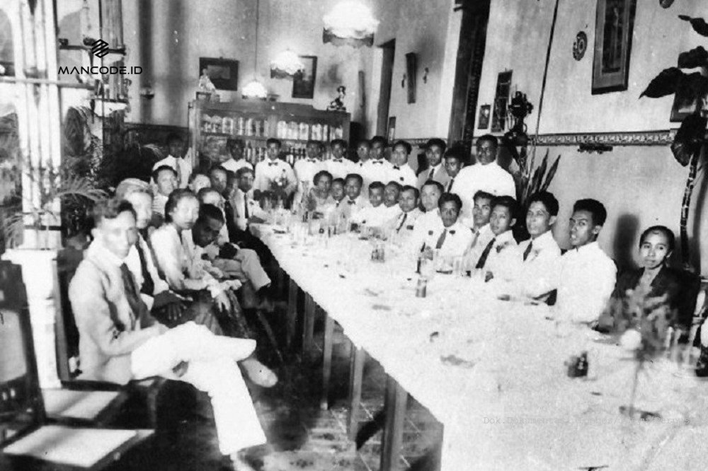
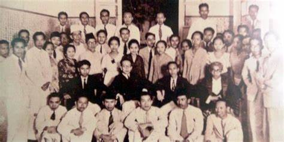

Sejarah

Sumpah Pemuda merupakan ikrar kebangsaan yang dirumuskan melalui sebuah putusan Kongres Pemuda Kedua di Jakarta pada 27-28 Oktober 1928. Ikrar ini adalah pernyataan kebangsaan pemuda pemuda Indonesia dari berbagai latar belakang daerah, suku, dan agama, menyatukan keyakinan mereka bahwa tumpah darah, bangsa, dan bahasa persatuan: ialah Indonesia. Keyakinan itu lalu disebarluaskan untuk dijadikan asas bagi semua perkumpulan kebangsaan Indonesia setelah peristiwa Kongres Pemuda Kedua.
Kongres Pemuda Kedua digagas oleh Perhimpunan Pelajar Pelajar Indonesia (PPPI), sebuah organisasi pemuda yang beranggotakan pelajar dari seluruh Indonesia. Kongres ini bertujuan untuk memperkuat rasa persatuan dan kebangsaan Indonesia yang telah tumbuh di dalam benak dan sanubari pemuda-pemudi. Sebelum kongres digelar, para pemuda mengadakan pertemuan terlebih dahulu pada 3 Mei 1928 dan 12 Agustus 1928. Mereka membahas tentang pembentukan panitia, susunan acara kongres, waktu, tempat, dan biaya. Kemudian pertemuan itu menyepakati bahwa Kongres Pemuda Kedua akan diselenggarakan pada 27-28 Oktober 1928 di tiga lokasi berbeda, yaitu gedung Katholieke Jongenlingen Bond, Oost Java Bioscoop, dan Indonesische Clubgebouw (Rumah Indekos, Kramat No. 106). Keseluruhan biaya akan ditanggung oleh organisasi-organisasi yang menghadiri kongres serta sumbangan sukarela. Selain itu, pertemuan juga menyepakati pembentukan kepanitiaan kongres dengan susunan sebagai berikut:
Ketua: Sugondo Djojopuspito (PPPI)
Wakil Ketua: R.M. Djoko Marsaid (Jong Java)
Sekretaris: Muhammad Yamin (Jong Sumatranen Bond)
Bendahara: Amir Sjarifudin (Jong Bataks Bond)
Pembantu I: Johan Mahmud Tjaja (Jong Islamieten Bond)
Pembantu II: R. Katja Soengkana (Pemoeda Indonesia)
Pembantu III: R.C.L. Sendoek (Jong Celebes)
Pembantu IV: Johannes Leimena (Jong Ambon)
Pembantu V: Mohammad Rochjani Sujud (Pemoeda Kaoem Betawi)
Kongres

KONGRES 1
Awalnya penyelenggaraan kongres pemuda 1 merupakan hasil keputusan dari konferensi organisasi Pemuda Nasional. Konferensi yang diselenggarakan tanggal 15 Agustus 1925 itu dihadiri oleh pemuda dari berbagai organisasi kedaerahan.
Konferensi yang diadakan di Gedung Lux Orentalis, Jakarta ini membahas banyak hal terkait pergerakan pemuda Indonesia. Salah satu hasil kongresnya yakni menyetujui kongres pemuda 1 yang jadi wadah aspirasi, diskusi juga pemersatu pemuda dari berbagai organisasi kedaerahan.
Kongres pemuda 1 dilaksanakan pada tanggal 30 April hingga 2 Mei 1926. Kongres pemuda ini disebut juga dengan istilah Het Eerste Indonesiche Jeugdcongres. Pembukaan kongres dilaksanakan di Gedung Vrijmetselaarsloge, Jakarta.
Penyelenggaraan dilanjutkan di Kawasan Lapangan Banteng, Jakarta atau yang dulu disebut dengan Weltevreden. Kongres pemuda 1 menggunakan bahasa pengantar Belanda sedangkan tema yang dibawakan yakni “Penyebaran Jiwa Kebangsaan Indonesia di Kalangan Pemuda Indonesia”.
Lebih dalam isi kongres membahas mengenai pembentukan badan atau organisasi terpusat, gagasan persatuan, peran agama, peran wanita hingga membahas perancangan konsep menuju kemerdekaan Indonesia.
B. Susunan Kepanitiaan Kongres Pemuda 1
Rangkaian acara dibuat sepadat mungkin untuk membahas berbagai persoalan yang telah ditemakan. Susunan kepanitiaan yang diisi oleh pemuda dari berbagai organisasi kedaerahan disiapkan untuk memastikan kongres berjalan lancar. Berikut susunan kepanitiaan dalam kongres pemuda 1:
Ketua : Mohammad Tabrani (Jong Java)
Wakil Ketua : Soemarno (Jong Java)
Sekretaris : Djamaluddi Adinegoro (Jong Soematranen Bond)
Bendahara : Soewarso (Jong Java)
Anggota :
Achmad Hamami (Sekar Rokoen)
Bahder Djohar (Jong Soematranen Bond)
Jan Toule Soulehwij (Jong Ambon)
Paul Pinontoan (Jong Celebes)
Sanusi Pane (Jong Bataks Bond)
Sabrani (Jong Sumatranen Bond)
Kepanitiaan yang diisi oleh berbagai pemuda dari organisasi kedaerahan ditujukan sebagai simbol kebersamaan dan kesetaraan. Sementara itu pemimpin kongres yakni Mohammad Tabrani bertugas memimpin jalannya kongres hingga selesai.
Lain dari susunan kepanitiaan kongres, peserta kongres yang datang ternyata lebih banyak dari perkiraan. Peserta kongres meliputi pemuda pemudi dari berbagai organisasi kedaerahan yang tidak hanya mewakili pemuda daerahnya saja tapi mewakili suara pemuda untuk memulai pergerakan.

KONGRES 2
Kongres pemuda dua digadang sebagai kongres berskala nasional yang jadi tolak pacu pergerakan pemersatu pemuda Indonesia. Kongres kedua ini berlangsung di Batavia (Jakarta) pada tanggal 27-28 Oktober 1928. Kali ini Sugondo Joyopuspito menjadi ketua kongres.
Kongres ke dua dibuat atas putusan bersama yang menyatakan bahwa kongres pertama tidak menghasilkan hasil yang cukup kongkret. Selanjutnya kongres ini berlangsung dalam 3 tahap selam 2 hari. Latar belakang ingin mewujudkan cita-cita pemersatu bangsa juga jadi pemicunya.
Ternyata peristiwa pemberontakan PKI, berdirinya partai politik pada 1927 dan pulangnya para anggota Perhimpunan Indonesia dari Belanda mempengaruhi semangat juang para pemuda. Pemikiran politik secara terbuka pun terus berkembang.
Awalnya dilakukan pertemuan pada tanggal 2 Mei 1928 di Clubgebouw di Jalan Kramat Raya.hasil pertemuan ini menyepakati bahwa kongres pemuda perlu diadakan kembali. Lalu disambung dengan pertemuan kedua yang diadakan pada 12 Agustus 1928.
Pertemuan yang dibalut rapat ini dihadiri oleh berbagai perwakilan organisasi kepemudaan daerah. Isinya memutuskan bahwa kongres ke dua perlu diadakan menyambung kongres pertama. Susuan kepanitiaan dibentuk dan rancangan kegiatan disusun pada pertemuan kedua ini.
Informasi kongres ini disebar dengan seruan “Kerapatan (congrs) pemoeda-pemoeda Indonesia di Weltevreden (27-28 Oktober). Datanglah ke congress ini djangan loepa” lewat koran Persatuan Indonesia. Siapa pun boleh datang di kongres ini membuat ratusan pemuda datang berbondong ke Jakarta.
SUSUNAN PANITIA
Dalam sejarah kongres pemuda 1 & 2 memiliki sistem kepanitiaan yang serupa berupa susunan kepanitiaan yang terdiri dari beragam tokoh berbagai organisasi kepemudaan. Ini dilakukan untuk menandakan simbol persatuan dalam keberagaman. Berikut susunan panitia kongres pemuda kedua:
Ketua : Sugondo Joyopuspito (PPPI: Perhimpunan Pelajar Pelajar Indonesia)
Wakil Ketua : RM Joko Marsaid (Jong Java)
Sekertaris : Muhammad Yamin (Jong Sumatranen Bond)
Bendahara : Amir Sjarifuddin (Jong Bataks Bond)
Pembantu I : Johan Mohammad (Jong Islamieten Bond)
Pembantu II : Kaca Sungkana (Pemuda Indonesia)
Pembantu III : Senduk (Jong Celebes)
Pembantu IV : Johanes Leimena (Jong Ambon)
Pembantu V : Rochjani Soejoed (Pemuda Kaum Betawi)
Susunan kepanitiaan ini berjalan selayaknya kepanitiaan pada kongres pertama. Dengan adanya ketua yang baru dan jajaran pembantu didalamnya kongres dapat terlaksana selam dua hari dengan cukup sukses.